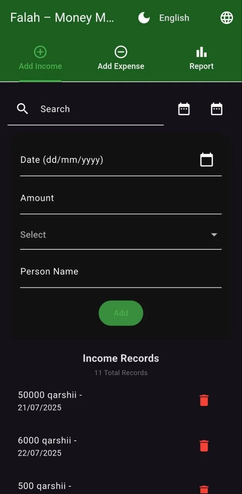
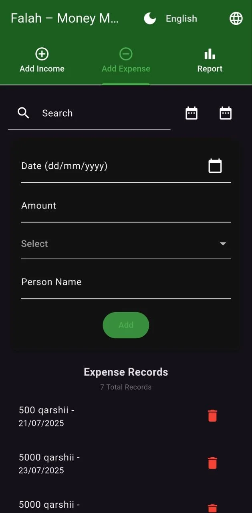
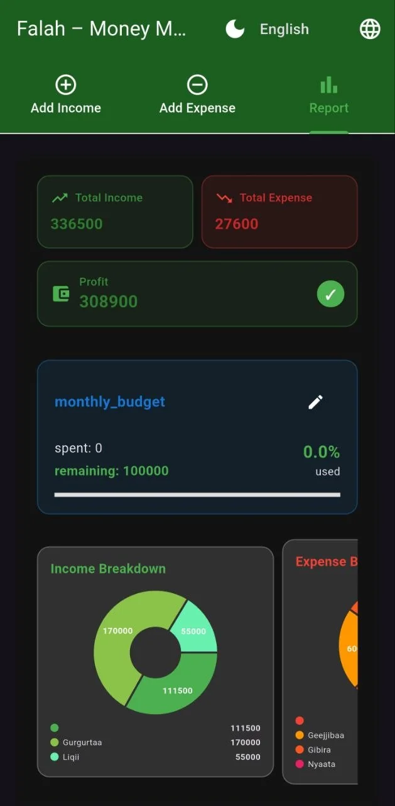

01
Analytical thinking
I break complex requirements into clear, manageable steps and turn them into practical product improvements.
AVAILABLE FOR OPPORTUNITIES
I'm Muaz Fathi Ahmed, a Software Engineering graduate who enjoys turning real needs into clear, practical web and mobile experiences.
01 / ABOUT ME
I build practical software that makes everyday tasks simpler.
I’m a Software Engineering graduate from Adama Science and Technology University. My experience spans web and mobile development, requirements engineering, networking, and technical support.
I’ve contributed to software projects, documented system requirements, built user interfaces, and troubleshot networking and CCTV systems. I’m looking for a junior software engineering or IT role where I can support a team, solve real problems, and keep growing.
BSc in Software Engineering
Adama Science and Technology University · July 2025
Web development · Requirements engineering · Mobile apps · IT support
Addis Ababa, Ethiopia
02 / WHY ME
I combine practical problem-solving with a clean, user-focused approach to build digital experiences that are useful and easy to maintain.
I break complex requirements into clear, manageable steps and turn them into practical product improvements.
I focus on clarity, usability, and accessibility so people can understand and use the solution with ease.
From requirement gathering to implementation and troubleshooting, I enjoy building work that is steady, helpful, and ready for real use.
03 / HIGHLIGHTS
From web apps to mobile tools and digital support workflows.
Combining software development, networking, and technical support.
Constantly improving through hands-on projects and real-world problem solving.
04 / WORK PROCESS
I start by clarifying the goal, the users, and the practical problem the product needs to solve.
I create a clear structure and interface flow that keeps the experience simple, useful, and easy to navigate.
I implement the solution, test the interactions, and improve usability based on what matters most.
I keep learning from the result, refine the details, and look for ways to make the product stronger.
05 / SERVICES
I can support projects that need practical, user-friendly digital solutions, from structure and design to implementation and support.
Clean, responsive web interfaces built to look polished and work smoothly across screen sizes.
App layouts and screen flows focused on clarity, usability, and a strong user experience.
Technical assistance for everyday digital operations, troubleshooting, and practical workflow improvement.
06 / TOOLKIT
A selection of technologies and tools from my learning and project work.
HTML · CSS · JavaScript
Web interfacesFlutter · Dart · Kotlin · Android
Mobile applicationsJava · PHP · Django · MySQL
Application logicVS Code · Android Studio · Networking
Development workflow07 / SELECTED WORK
A selection of project work, with links to public repositories where available.
Built for pharmacies and wholesalers in Ethiopia, this system supports real-time inventory tracking, low-stock and expiry notifications, barcode scanning, ordering, role-based access, and reporting.
View repository ↗A PHP-based online shopping site with product browsing, a shopping cart, checkout, and customer account and order flows.
View repository ↗


A Flutter app project for recording income and expenses and reviewing a financial report. The screenshots above show its entry and reporting screens.
A lightweight Python search engine that indexes documents, accepts search terms, and ranks matching results by relevance.
View repository ↗08 / EXPERIENCE & EDUCATION
Installed and maintained CCTV systems for businesses and households, set up and troubleshot computer networks, and provided technical support for networking and system configuration issues.
Developed and optimized UI components for community-based web platforms, improved interface usability and responsiveness, and collaborated with a development team.
Prepared business requirements and an SRS for a Human Resource Management System, conducted stakeholder interviews, and documented functional and non-functional requirements.
Completed a Software Engineering degree and a final-year project focused on inventory management for pharmacies and drug wholesalers.
09 / ADDITIONAL
Udacity · September 2024
ASTU Career Club Coordinator · 2023–2025
Ethiopian Space Science Society · Peace Forum · ASTU Student Union · Charity and Club 20/25
Fluent
Native
Advanced
Intermediate
10 / GET IN TOUCH
I'm open to discussing junior developer roles, graduate opportunities, and interesting projects.